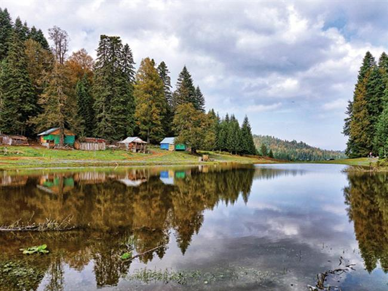

Pürenli Yaylası
Pürenli Yaylası'nda Rüya Gibi Bir Kamp
Pürenli Yaylası, Düzce ilinin Gölyaka ilçesinde yer alır ve yemyeşil doğasıyla kampçıların gözdesidir. Sisli sabahlar, kuş sesleri ve yıldızlı geceler burada kamp yapmayı adeta bir masala dönüştürüyor.
- Yayla kampı için serin gece havasına uygun ekipman şart.
- Taşlı yol nedeniyle araçla ulaşım dikkat gerektirir.
- Çevredeki Balıklı Yayla ve Torkul Gölü gibi alanlar günübirlik keşif için idealdir.